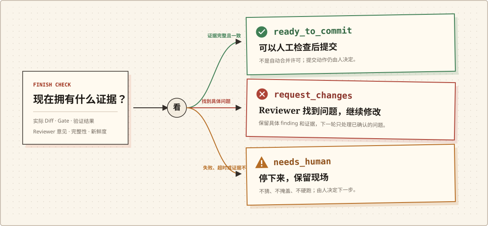

只听模型汇报
一句“改好了”，后面全靠人追
- 01模型修改代码，并口头说明已经完成。
- 02测试跑没跑、跑的是不是当前 Diff，需要重新确认。
- 03几百行 Diff 摊在面前，风险位置没有单独指出。
- 04进程超时或中断后，现场是否可信并不清楚。
One writes, one reviews.
“我已经改好了，测试也过了。”
我们也不敢。
所以我们写了 Vega。
Worker 写完后，Reviewer 从一个全新的会话开始，只看任务、真实 Diff、 测试结果和项目规则，不接着 Worker 的对话往下说。
项目自己的测试必须真的跑通；改了什么、风险在哪里，也得说清楚。 证据不足，Vega 就停下来，保留现场，交给你接管。
Vega 不替你合并代码。它先把该看的证据摆在桌面上。

01 / 真实问题
差别不在于“用了几个 Agent”，而在于最后留下了什么，失败时又会不会硬着头皮往下跑。
只听模型汇报
经过 Vega
02 / 六个检查点
六个检查点只回答六个具体问题。任何一项缺证据，都不会被一句
approve 覆盖。
Baseline
哪些改动属于这次任务？
Worker
代码到底动了什么？
Gates
有没有越界、污染或碰到高风险代码？
Verify
哪些命令真的通过了？
Review
Reviewer 找到了什么？
Finish
可以检查后提交，还是必须人工处理？
03 / 真实运行
以下数字来自公开的追加式运行记录。它们是三个可复核案例，不是成功率统计。
当前裁决
一轮完成小范围补丁，验证、范围门禁和独立审查均有可核对结果。
证据上限
这是 Issue 已明确期望行为的单案例，不证明未知缺陷发现能力、 模型未见过上游修复或跨仓库成功率。
同一证据链也跑过：
Node SemVer Windows 行尾与工具残留边界 Testify Go shell 预检与仓库外缓存边界04 / 三种结局
Vega 不把所有运行都挤成绿色。结论必须和当时真正拥有的证据相符。

ready_to_commit 仍然不是自动合并许可；最终提交动作始终由人决定。
05 / Design Boundary
approve 不能覆盖验证失败。06 / Quick Start
当前主会话修改代码，Vega 固定现场、跑验证、启动独立 Reviewer，再生成 Finish 结论。
如果你还不知道 Bug 在哪里，先由主会话调查并确认计划，不要让
vega do 猜范围。
python -m pip install -e ".[dev]"
vega config check --repo .
vega loop bug --repo . --text "修复一个边界明确的缺陷" --mode assist
vega loop continue --repo . --run <run_id>
vega finish --run <run_id>